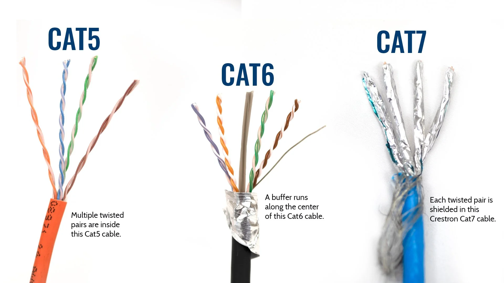

Wired Network Technologies
⭐ CCST GOLD LINE
Wired networks use physical cables to transmit data using electricity or light
Wired networks use physical cables to transmit data using electricity or light
🔌 1️⃣ Wired Network Technologies (Copper & Fiber)
🧵 A) Copper-Based Wired Networks
In copper-based wired networks, data is transmitted using electrical signals through copper cables.
🔹 Common Copper Cables
- Twisted Pair (Cat5e, Cat6, Cat6a)
- Coaxial cable (older)
Copper Network Cables (Twisted Pair Comparison)

Coaxial Cable

🔹 Where Copper Networks Are Used
- Homes
- Offices
- Schools
- LAN networks
🔹 Example
🧠 Example network flow:
PC ── Ethernet ── Switch ── Ethernet ── Router
PC ── Ethernet ── Switch ── Ethernet ── Router
🔹 Pros & Cons (Copper)
✅ Advantages
- Cheap
- Easy installation
- Reliable for short distances
- Maximum distance ≈ 100 meters
- Affected by electrical interference (EMI)
💡 B) Fiber-Based Wired Networks
Fiber-based wired networks transmit data using light signals instead of electricity.
🔹 Where Fiber Networks Are Used
- Internet backbone
- ISPs
- Data centers
- Long-distance connections
🔹 Example
🧠 Long-distance example:
City A ── Fiber ── City B ── Fiber ── Country C
City A ── Fiber ── City B ── Fiber ── Country C
🔹 Pros & Cons (Fiber)
✅ Advantages
- Extremely high speed
- Very long distance
- Immune to EMI
- More secure
- Expensive
- Fragile
- Complex installation
🧠 Exam Tip
If the question mentions:
Long distance + High speed → ✅ Fiber
If the question mentions:
Long distance + High speed → ✅ Fiber
Wireless Network Technologies (Wi-Fi)
⭐ CCST GOLD LINE
Wireless networking = Data sent using radio waves (no cables)
Wireless networking = Data sent using radio waves (no cables)
📶 2️⃣ Wireless Network Technologies (Wi-Fi)
Wireless networking allows devices to communicate without physical cables by using radio waves.
📌 Wi-Fi is based on IEEE 802.11 standards
📡 Wi-Fi Frequency Bands (VERY IMPORTANT)
📶 A) 2.4 GHz Band
🔹 Characteristics
Up to ~600 Mbps (theoretical)
🔹 Used For
- Longer range
- Slower speed
- More interference
Up to ~600 Mbps (theoretical)
🔹 Used For
- Older devices
- Smart bulbs
- IoT devices
📶 B) 5 GHz Band
🔹 Characteristics
1 – 3 Gbps (theoretical)
🔹 Used For
- Shorter range
- Higher speed
- Less interference
1 – 3 Gbps (theoretical)
🔹 Used For
- Streaming
- Gaming
- Video calls
📶 C) 6 GHz Band (Wi-Fi 6E / Wi-Fi 7)
🔹 Characteristics
- Very high speed
- Very low interference
- Shorter range
- Newest devices only
- AR / VR
- 4K / 8K streaming
- Enterprise networks
📊 Quick Comparison Table (EXAM READY)
| Band | Range | Speed | Interference |
|---|---|---|---|
| 2.4 GHz | Long | Low | High |
| 5 GHz | Medium | High | Medium |
| 6 GHz | Short | Very High | Very Low |
🧠 Memory Trick (Exam Gold 🥇)
Lower frequency → Longer range
Higher frequency → Higher speed
Lower frequency → Longer range
Higher frequency → Higher speed
Cellular Networks (Licensed Spectrum)
⭐ CCST GOLD LINE
Cellular networks use licensed radio spectrum managed by telecom providers
Cellular networks use licensed radio spectrum managed by telecom providers
📱 3️⃣ Cellular Networks (Licensed Spectrum)
Cellular networking is a wireless communication technology that uses licensed radio frequencies controlled by telecom service providers.
📌 Requires a SIM card to access the network
🔹 Examples of Cellular Technologies
- 2G → Voice calls & SMS
- 3G → Internet + calls
- 4G (LTE) → High-speed mobile internet
- 5G → Ultra-low latency, IoT, AR/VR
🔹 Why Licensed Spectrum?
Licensed spectrum is used to:
- Prevent interference
- Ensure controlled usage
- Provide reliable communication
🔹 Where Cellular Networks Are Used
- Mobile phones
- Mobile hotspots
- IoT devices
- Vehicles (connected cars)
🔹 Pros & Cons
✅ Advantages
- Works almost everywhere (wide coverage)
- Supports mobility
- Managed quality of service
- Costly compared to Wi-Fi
- Speed varies with network load
- Depends on signal strength
🧠 CCST Memory Trick
SIM card = Cellular network
Licensed spectrum = controlled & reliable
5G = low latency + future tech
SIM card = Cellular network
Licensed spectrum = controlled & reliable
5G = low latency + future tech
Sources of Interference
⭐ CCST GOLD LINE (VERY IMPORTANT)
Interference = Anything that disturbs or weakens network signals
Interference = Anything that disturbs or weakens network signals
⚡ 4️⃣ Sources of Interference
Interference occurs when unwanted signals or obstacles reduce the quality, speed, or reliability of a network connection.
📛 A) Electrical Devices
Electrical devices generate electromagnetic noise that can
interfere with network signals.
- Microwave ovens
- Refrigerators
- Power lines
📶 B) Wireless Devices
Multiple wireless devices using the same frequency can
cause signal overlap.
- Bluetooth devices
- Other Wi-Fi networks (neighbors)
- Baby monitors
- Cordless phones
🧱 C) Physical Obstacles
Physical objects can block or weaken wireless signals.
- Walls
- Metal objects
- Furniture
- Elevators
🌦️ D) Environmental Factors
Environmental conditions can affect signal quality,
especially in long-range wireless links.
- Weather (rain, storms)
- Long distance from signal source
🧠 Exam Tip (VERY IMPORTANT)
2.4 GHz suffers more interference than 5 GHz
2.4 GHz suffers more interference than 5 GHz
🛠️ How to Reduce Interference (Extra Knowledge)
✔ Use 5 GHz or 6 GHz Wi-Fi
✔ Change Wi-Fi channel
✔ Place router in an open, central location
✔ Use wired connection when possible
✔ Upgrade to Wi-Fi 6 / Wi-Fi 6E
✔ Change Wi-Fi channel
✔ Place router in an open, central location
✔ Use wired connection when possible
✔ Upgrade to Wi-Fi 6 / Wi-Fi 6E
🧠 Memory Trick
More devices + lower frequency = more interference
Higher frequency = cleaner signal
More devices + lower frequency = more interference
Higher frequency = cleaner signal